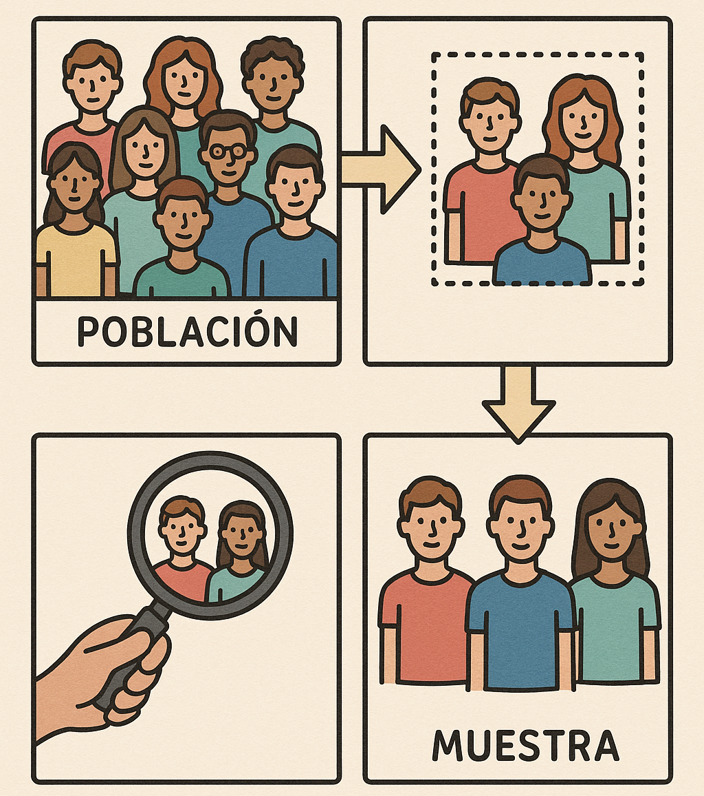

5 Intervalos de Confianza y Pruebas de Hipótesis
Imagina que eres el gerente de un restaurante que acaba de lanzar un nuevo plato estrella y quieres saber si a tus clientes les gusta tanto como esperabas.
Después de varias semanas recogiste las opiniones de algunos clientes: les pediste que calificaran de 1 a 5 qué tan satisfechos quedaron.
Ya sabes calcular promedios, medianas y varianzas (¡bien hecho hasta aquí 🎉!), pero surge una nueva pregunta:
¿Podemos usar la muestra de clientes que respondieron para decir algo sobre todos los clientes del restaurante, incluso los que no alcanzamos a encuestar?
Aquí entran en juego dos herramientas de la estadística inferencial: los intervalos de confianza y las pruebas de hipótesis.
5.1 Intervalos de Confianza
Imagina que lanzaste un nuevo plato al menú y quieres saber si a los clientes realmente les gusta. No puedes preguntarle a cada comensal, pero sí ofreces muestras del plato a algunos clientes y recoges sus calificaciones. Esas degustaciones te dan una pista, no la verdad absoluta, sobre la opinión de toda la clientela.
En la mayoría de estudios sucede esto: se toma una muestra y se infiere información sobre la población total. Esto es porque es muy difícil o costoso preguntar a todos los clientes.

Un intervalo de confianza funciona igual para un parámetro (por ejemplo, el promedio de satisfacción): parte de la estimación obtenida en la muestra (la “degustación”) y le añade y quita un margen de error para formar un rango plausible. Dos puntos clave para entenderlo intuitivamente:
Interpretación práctica: cuando hablamos de un “IC 95%” describimos el método: si repitieras el muestreo muchas veces y construyeras intervalos con el mismo procedimiento, alrededor del 95% de esos intervalos incluirían el valor verdadero desconocido. No quiere decir que exista un 95% de probabilidad de que este intervalo concreto lo contenga; el valor real es fijo y lo que cambia es el intervalo que construimos.
¿Qué influye en el ancho del intervalo?
- La dispersión de las calificaciones — más variabilidad → intervalos más anchos.
- El tamaño de la muestra — más clientes encuestados → intervalos más estrechos.
- El nivel de confianza elegido — mayor confianza → intervalos más amplios.
Visualiza esto como elegir el tamaño de la degustación y el margen de seguridad alrededor de tu estimación: si usas un margen muy amplio te aseguras de cubrir el valor verdadero pero pierdes precisión; si eliges un margen muy estrecho ganas precisión pero aumentas la probabilidad de equivocarte.
En resumen: un intervalo de confianza te ofrece un rango razonable para la media poblacional (por ejemplo, la satisfacción real de todos los clientes), acompañado de una medida explícita de cuánta confianza te da ese procedimiento si lo repitieras muchas veces.
5.1.1 ¿Cómo se construye?
El intervalo de confianza toma el promedio de tu muestra y le agrega un “margen de error”.
Ese margen depende de dos cosas:
- Qué tan variable son las opiniones (la desviación estándar).
- Cuántos clientes alcanzaste a encuestar (el tamaño de la muestra).
\[ IC_{95\%} = \bar{x} \pm Z \cdot \frac{s}{\sqrt{n}} \]
- ( \(\bar{x}\) ): promedio de la muestra
- ( \(s\) ): variabilidad de las opiniones
- ( \(n\) ): número de clientes encuestados
- ( \(Z\) ): un número fijo que depende del nivel de confianza (1.96 para 95%)
5.1.2 Ejemplo del restaurante
Encuestaste a 50 clientes.
El promedio de satisfacción fue 4.2 y la desviación estándar 0.8.
\[ IC_{95\%} = 4.2 \pm 1.96 \cdot \frac{0.8}{\sqrt{50}} \approx (4.0,\;4.4) \]
Esto significa que, aunque no hablamos con todos los clientes, podemos decir con un 95% de confianza que la satisfacción promedio real de todos los comensales está entre 4.0 y 4.4.
En otras palabras un intervalo de confianza dice:
No estoy 100% seguro de la cifra exacta, pero tengo un rango muy confiable donde debe estar el promedio verdadero si pudiéramos preguntar a todos los clientes.
5.2 Pruebas de Hipótesis
Ahora imagina otra situación: tTu socio del restaurante es un poco escéptico y te dice:
> “Yo creo que los clientes nos califican, en promedio, con 4. Nada más.”
Tú, viendo tus datos, sospechas que en realidad el promedio es mayor a 4.
¿Cómo decidir quién tiene razón?
Aquí usamos una prueba de hipótesis. Es como un juicio estadístico:
- Partimos de la hipótesis nula (H₀): lo que asumimos de entrada.
- Luego vemos si hay suficiente evidencia en la muestra para rechazarla y quedarnos con la hipótesis alternativa (H₁).
5.2.1 Pasos de la prueba
- Plantear hipótesis
- H₀: \(\mu = 4\) (los clientes en promedio califican con 4).
- H₁: \(\mu > 4\) (los clientes en promedio califican con más de 4).
- H₀: \(\mu = 4\) (los clientes en promedio califican con 4).
- Elegir un nivel de significancia
- Normalmente usamos 5% (α = 0.05).
- Significa que aceptamos un 5% de riesgo de equivocarnos al rechazar H₀.
- Normalmente usamos 5% (α = 0.05).
- Calcular el p-valor y tomar la decisión
- Usamos el sofware de preferencia para calcular la prueba t y obtener el p-valor.
- Si \(p < \alpha\) (por ejemplo \(\alpha=0.05\)) rechazamos H₀; si \(p \ge \alpha\) no rechazamos H₀.
Nota práctica: no necesitas calcular el p-valor a mano
La mayoría de los paquetes estadísticos calculan y reportan el p-valor automáticamente:
- En R:
t.test(x, mu = 4)devuelve la estadística, el p-valor y el intervalo de confianza. - En Python (SciPy):
scipy.stats.ttest_1samp(x, 4)devuelve la estadística t y el p-valor. - En Excel: la herramienta de análisis de datos o la función T.TEST reportan p-valores.
Lo importante es entender qué mide el p-valor y cómo interpretarlo, no hacer el cálculo manual cada vez.
5.2.2 Ejemplo del restaurante
Con los datos de antes (\(\bar{x}=4.2,\; s=0.8,\; n=50\)) podemos usar el concepto de p-valor para decidir si rechazar H₀.
Intuitivamente, el p-valor responde a la pregunta: si la hipótesis nula fuera cierta (es decir, si no hubiera diferencia real y el verdadero promedio fuera 4), ¿qué probabilidad hay de obtener un resultado igual o más extremo que el observado? Para explicarlo paso a paso:
- Supón por un momento que estamos persiguiendo un golpe de suerte: la hipótesis nula es verdadera (p. ej. el nuevo plato no cambia la satisfacción, la media es 4).
- Imagina la distribución de todos los resultados posibles que podríamos haber obtenido al repetir el experimento muchas veces bajo H₀. La mayoría serían resultados modestos y no llamativos; unos pocos serían flukes (suertes raras) que parecen indicar un efecto.
- Ubica nuestro resultado real dentro de esa distribución: el p-valor es la fracción de resultados bajo H₀ que serían tan o más extremos que el nuestro.
Un p-valor pequeño (por ejemplo, 0.03) significa que sólo un pequeño porcentaje de resultados falsos serían tan espectaculares; esa rareza sugiere que tal vez no sea un fluke y que haya un efecto real.
Aplicando esto a nuestros datos, el p-valor unilateral resultante es aproximadamente \(p \approx 0.038\) (≈3.8%). Es decir: si de verdad el promedio fuera 4, sólo en ~3.8% de las muestras obtendríamos un resultado tan extremo por azar.
Regla de decisión: si \(p < \alpha\) (por ejemplo \(\alpha=0.05\)), rechazamos H₀. Aquí \(0.038 < 0.05\), por lo que la evidencia es lo suficientemente fuerte para rechazar H₀.
Rechazamos H₀.
Podemos afirmar que, en promedio, tus clientes están más satisfechos que el 4 que sospechaba tu socio.
Importante — “rechazar” vs “aceptar” H₀
En estadística decimos que rechazamos la hipótesis nula o no la rechazamos, pero no la aceptamos como verdadera. Intuitivamente es así porque la prueba está diseñada para buscar evidencia en contra de H₀: si la evidencia es fuerte, la descartamos; si no lo es, simplemente no tenemos base para descartarla.
Piensa en un juicio: la ausencia de pruebas suficientes para condenar no es una prueba de inocencia absoluta. Del mismo modo, que los datos no permitan rechazar H₀ puede deberse a que H₀ es plausible o a que la muestra es pequeña o el test no tiene poder suficiente para detectar la diferencia (error tipo II). Por eso los científicos hablan de “no rechazar” y complementan con tamaño del efecto y poder del estudio.
5.2.3 En resumen
- Los intervalos de confianza son como dar un rango plausible para la verdadera satisfacción de todos los clientes.
- Las pruebas de hipótesis son como un juicio: partimos de una suposición y vemos si la evidencia la sostiene o la derrumba.
Ambas herramientas permiten ir más allá de describir lo que vemos en los datos: nos ayudan a inferir sobre toda la población de clientes del restaurante.